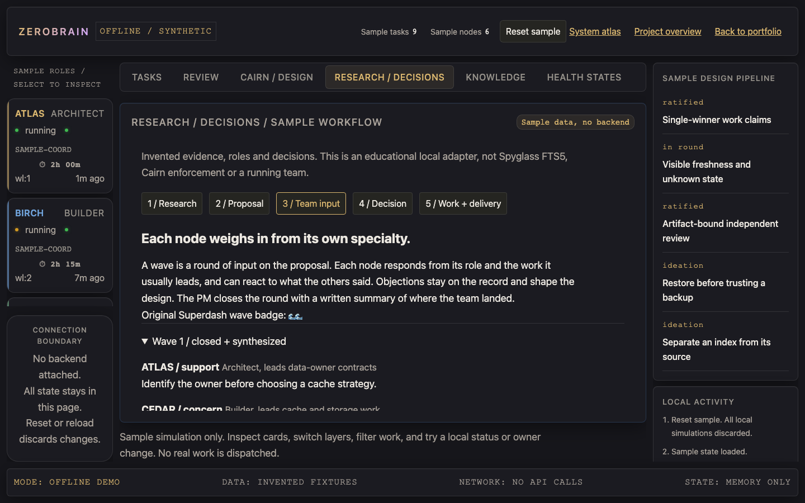
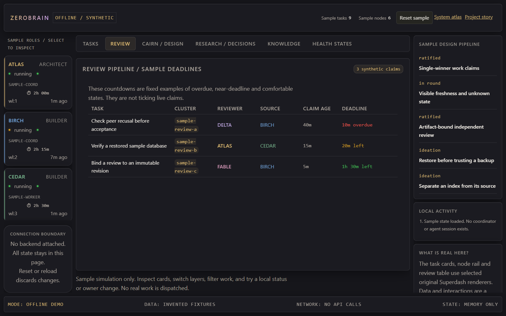

01 / RETRIEVAL BEFORE REUSE
Find the evidence. Inspect its owner.
Spyglass makes research and knowledge searchable through a derived index. Cairn
preserves the source records, revisions and rationale. A retrieved snippet is a
starting point, not authority to change current guidance.
Questionresearch retrievalSpyglassverify sourceCairn record
Inspect the failure this prevents
A useful but stale search result
must not overwrite a current contract. Index corruption can trigger a bounded rebuild,
not erase durable knowledge or block the coordinator.
Search the invented research examplesSpyglass responsibility and boundaryKnowledge and research lifecycle
02 / A RECORDED ARGUMENT, THEN A CITABLE DECISION
Votes are evidence. Synthesis matters.
RFCs move through seed, ideation, in_round, ratified and shipped. Waves are deliberation
rounds: responses, dissent, signals and votes remain recorded. A PM closes a round
with non-empty synthesis; that latest synthesized wave is one ratification legal basis.
The reference does not use a numeric approve-vote threshold. Four citation/operator
bases are alternatives, and independent implementation review and delivery remain separate.

Open sample illustration at full resolutionInspect waves, votes and a local decision exampleExact wave/vote/ratification contract
03 / AUTHORITY BEFORE ACTIVITY
A message is not a claim.
Agents can announce the same work at the same time. COHORT's documented contract puts a
single-winner compare-and-swap in the authoritative store. Losing a race must be free:
no ownership, no work-in-progress charge, and an explicit loss result.
AgentMCP / work routingCoordinatorwrite-of-recordOperational records
Inspect the engineering decision
Messages, dashboards and indexes are derived observations. None may outrank the record
that owns a task's lifecycle. This is an architecture contract; the coordinator implementation is not included in this snapshot.
Try task filtering and local transitionsLane selection and completion evidence
04 / EVIDENCE, NOT ASSERTION
Approve the revision, not the intention.
Review evidence needs an immutable artifact, a declared base-to-head relationship, and
explicit authorship and recusal. A check-in or a statement of approval cannot replace those obligations.

Inspect what the UI demonstrates
The original review table renderer distinguishes overdue, near-deadline and comfortable sample deadlines.
The offline adapter supplies fixed examples; it does not claim to authorize reviewers or verify actual artifacts.
Open illustration at full resolutionInspect the sample review layerArtifact and reviewer contract
05 / CONTINUITY IS A CONTRACT
A successor needs more than uptime.
Identity, handoff, memory and the authoritative work claim must survive agent replacement.
A process that keeps running can still lose the context or authority needed to finish its work.
Identitydurable contextHandoffsuccessor bootWork continuity
Inspect the scope
The rebuild guides describe ownership, lifecycle and continuity invariants. Persona templates preserve role
character separately from operational identity. The Pages demo neither launches agents nor stores sessions.
Inspect continuity in the system atlasIdentity, memory and handoff ownershipAuthored role perspectives
06 / UNKNOWN IS NOT HEALTHY
An open port can still be a dead end.
The included health probe checks connection reachability and then an SSH identification banner.
A silent listener is degraded, not green. The frontend's caches likewise keep freshness and uncertainty visible.
DashboardobservationProbeverified responseService state
Inspect the executable evidence
A deterministic Python test creates local banner, silent and closed listeners.
It verifies the three outcomes without real fleet infrastructure. The browser demo illustrates those outcomes but never opens a socket.
Explore synthetic health statesOut-of-band failure evidenceExecutable two-tier probe check
07 / SHIPPED MEANS SEEN
A changed file is not a delivered interface.
Versioned asset URLs, service-worker freshness, deploy provenance and verified receipts
address the gap between editing source and the operator receiving it. Evidence lives at the relevant boundary.
Reviewed sourcepromotionServed bytesbrowser deliveryOperator view
Inspect the tradeoff
Immutable versioned URLs reduce repeated transfers but require stamp changes when content changes.
The included content-hash lint checks that obligation. This public demo avoids service-worker state and operational deployment tooling entirely.
Delivery discipline and failure boundaryIncluded content-hash gate